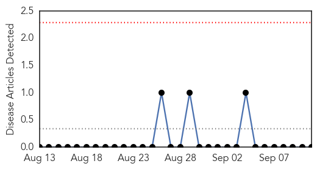
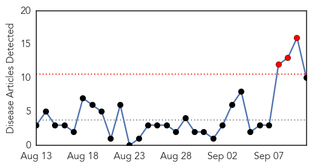
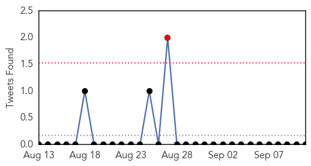
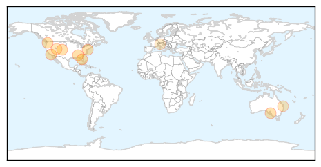
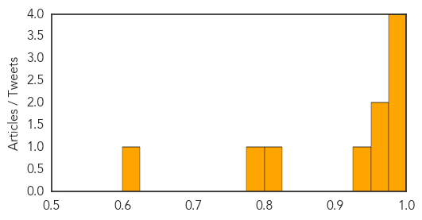

Mold/Fungal
30-Day Web Trend
0 alerts, 0 warnings

30-Day Twitter Trend
0 alerts, 0 warnings

Article Locations

Article Confidences

Top Articles:
-
No articles found for Sep 11, 2014
Top Tweets:
-
No tweets found for Sep 11, 2014
Influenza
30-Day Web Trend
3 alerts, 0 warnings

30-Day Twitter Trend
0 alerts, 0 warnings

Article Locations
Article Confidences
Top Articles:
- 0.999
- 5 bogus excuses people use to avoid the flu vaccine
- 0.999
- Health and school officials on watch for rare respiratory virus
- 0.986
- 15 children hospitalized, may be nasty strain of common virus
- 0.979
- Local doctors urge caution: Alabama children tested for mystery illness
- 0.974
- Number of Virus Cases in Garfield County Unclear
- 0.968
- Baby girl dies of meningococcal disease in Adelaide
- 0.940
- Samples of respiratory illness that sickened 12 Delaware kids sent to CDC
- 0.804
- Six-month-old baby girl dies from meningococcal disease in Adelaide
- 0.798
- Sniffles common in Utah due to respiratory virus outbreak
- 0.618
- Italy prepares for flu season
Top Tweets:
-
No tweets found for Sep 11, 2014